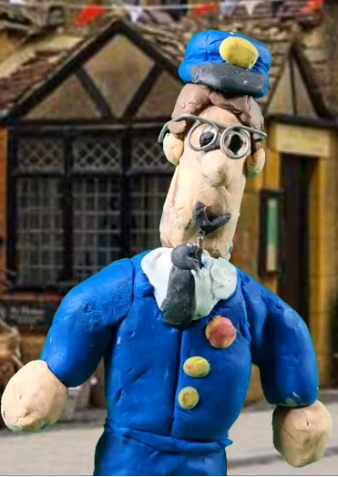
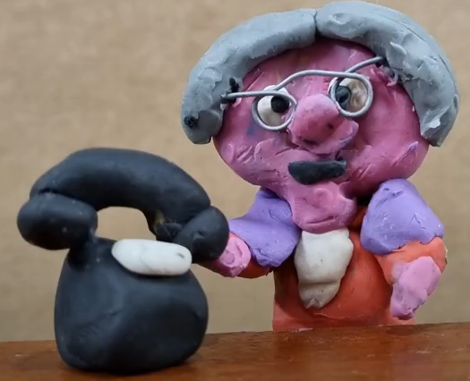
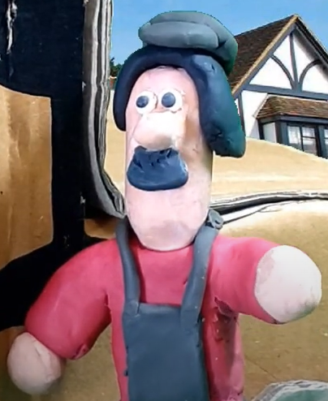
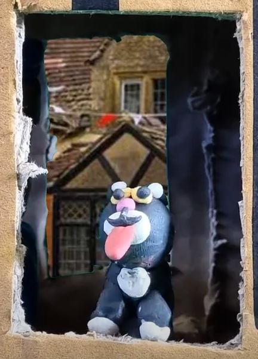
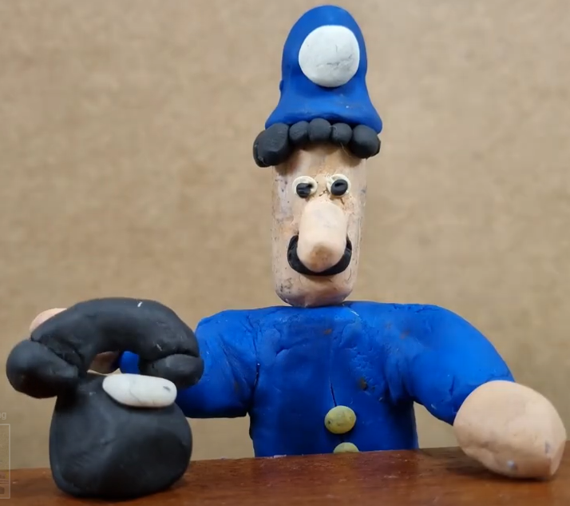

Postman Pat and the Heist
| Image |
Name |
Character Bio |
|  |
Postman Pat |
Pat is going through hard times what with the price of cat food and all the other bills he has to pay. Consequently he decides to take the bull by the horns and start out on a new life of crime.... |
|  |
Mrs Goggins |
Mrs Goggins loves a nice sun tan but has she overdone it this time...? |
|  |
Ted Glen |
Ted was going about a normal day when he stumbes into a desperate Pat. |
|  |
Jess |
|
|  |
Constable Selby |
Constable Selby is a man who like to do things by the book. He collects stamps, pictures of trains and bus numbers. He is also rather officious. However, when the call comes in from Mrs Goggins he jumps into action, ready to save the day. |